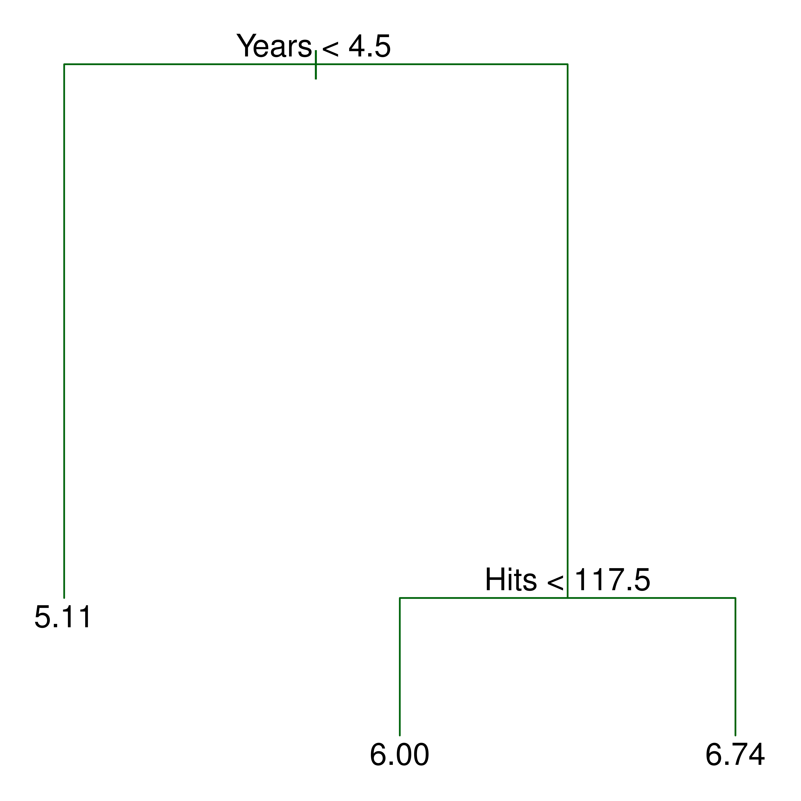
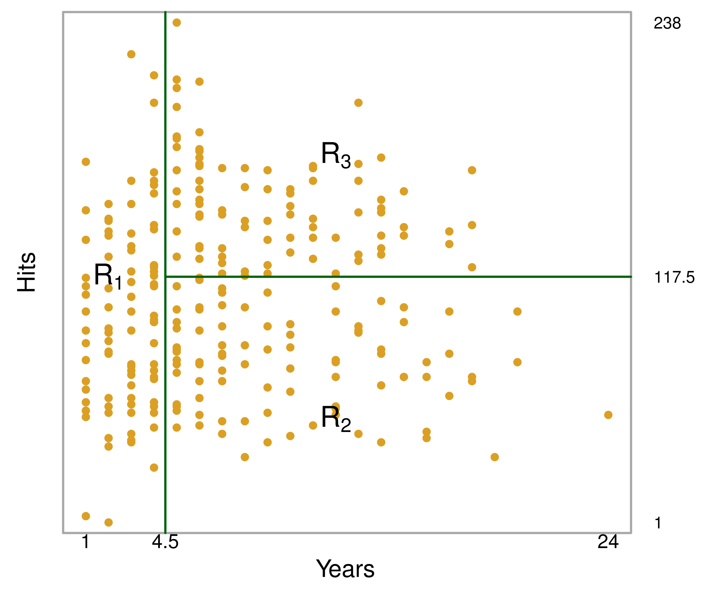
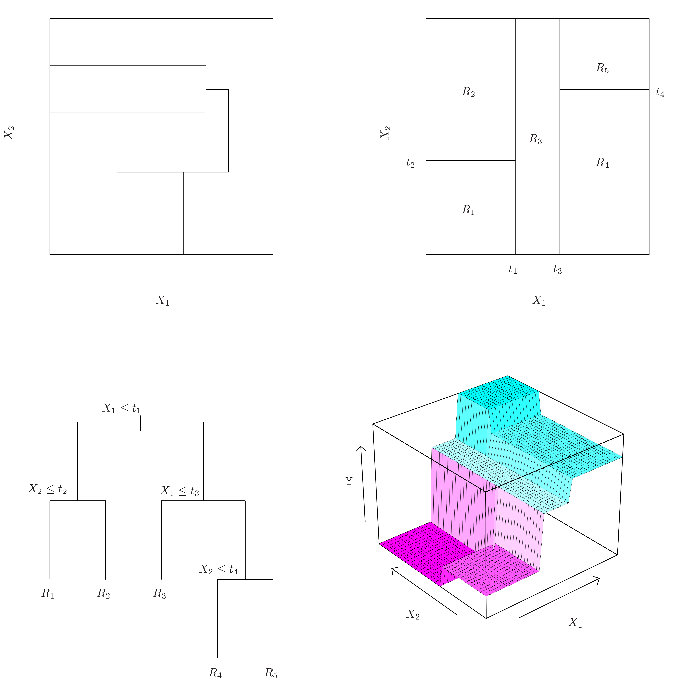
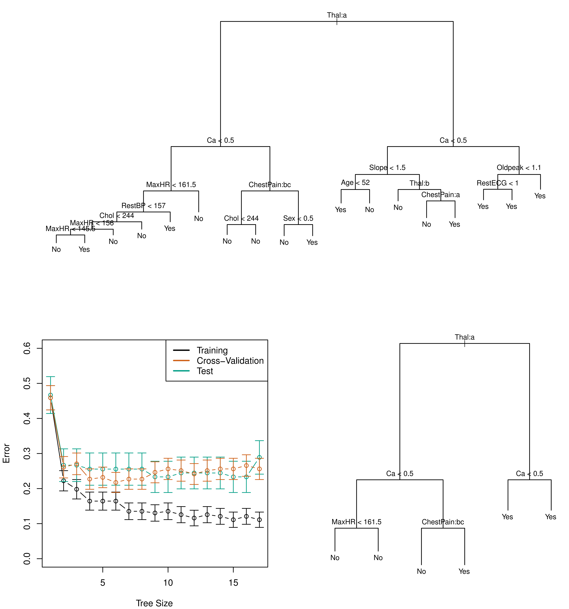
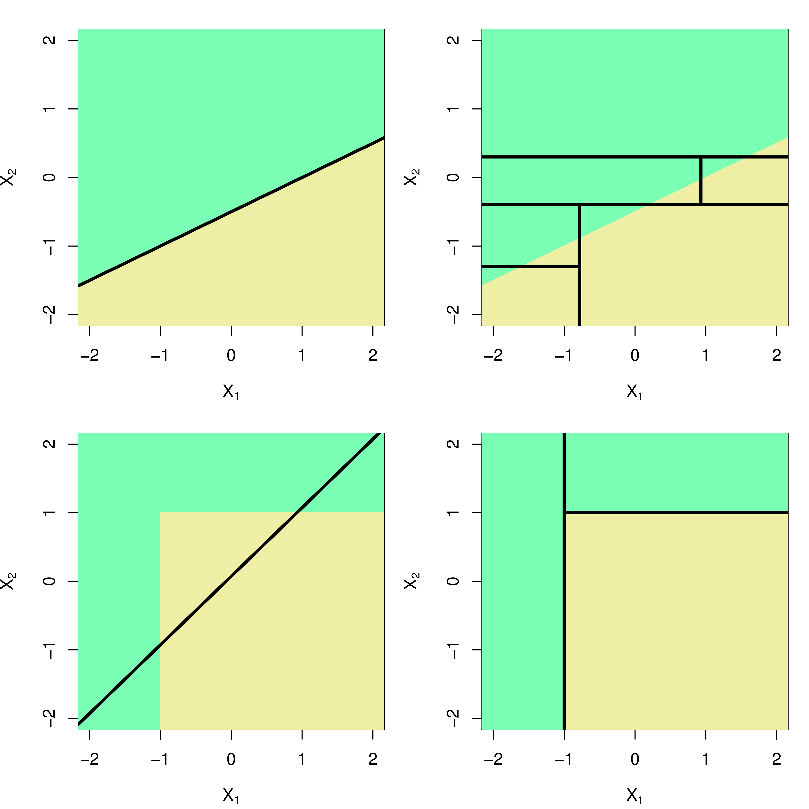

graph LR
A[Data Mining] --> C(Common Ground)
B[Machine Learning] --> C
D[Statistical Learning] --> C
C --> E[Insights & Predictions]
Introduction: Tree-Based Methods 🌳
This chapter introduces tree-based methods for regression and classification. These methods involve segmenting the predictor space into simpler regions.
Note
Tree-based methods are simple, interpretable, but often not as accurate as other methods. We’ll explore techniques like bagging, random forests, and boosting to improve their performance.
Core Concepts
Before diving into the detail, Let’s clarify some core concepts.
Data mining is the process of discovering patterns, anomalies, and insights from large datasets using a combination of methods from statistics, machine learning, and database management. It’s about extracting useful knowledge from raw data. 🔎
Machine learning is a subfield of artificial intelligence (AI) that focuses on developing algorithms that allow computers to learn from data, without being explicitly programmed. It involves building models that can make predictions or decisions based on input data.
Statistical learning refers to a set of tools for modeling and understanding complex datasets. It is a recently developed area in statistics and blends with parallel developments in computer science, and in particular machine learning. The tools of statistical learning are both conceptual and practical.
Relationships of Concepts
Tip
Data mining, machine learning, and statistical learning all overlap. They’re all about extracting insights and making predictions from data, but with different emphases and approaches.
Decision Trees: The Basics 🌲
Decision trees segment the predictor space using a series of splitting rules, summarized in a tree structure. They can be used for both regression and classification.
- Simple Interpretation: Easy to understand and visualize.
- Non-linear Relationships: Can capture complex non-linear patterns.
Regression Trees: A Simple Example
Let’s start with a regression tree example using the Hitters dataset to predict a baseball player’s salary.
- Predictors: Years (in the major leagues), Hits (in the previous year).
- Response: Log Salary (to achieve a more bell-shaped distribution).
Regression Tree for Hitters Data

Note
This tree predicts log(Salary) based on Years and Hits. The numbers in the leaves are the mean log(Salary) for players in that region.
Interpreting the Regression Tree
- Top Split:
Years < 4.5is the most important factor. Less experience generally means lower salary. - Internal Nodes: Represent splits in the predictor space (e.g.,
Hits < 117.5). - Branches: Connect the nodes.
- Terminal Nodes (Leaves): Represent the final predicted values (mean log(Salary) for that region).
- Example: The left branch means If a player played less than 4.5 years, his predicted log salary is 5.11.
Regions of Predictor Space

Note
The tree divides the predictor space (Years, Hits) into three rectangular regions (R1, R2, R3). Each region corresponds to a leaf in the tree.
Building a Regression Tree: Key Steps
- Divide Predictor Space: Split the space into J distinct, non-overlapping regions (R1, R2, …, RJ).
- Prediction: For every observation in region Rj, predict the mean of the response values of the training observations in Rj.
Constructing the Regions: Minimizing RSS
The goal is to find regions (R1, …, RJ) that minimize the Residual Sum of Squares (RSS):
\[ \text{RSS} = \sum_{j=1}^{J} \sum_{i \in R_j} (y_i - \hat{y}_{R_j})^2 \]
- \(\hat{y}_{R_j}\): Mean response for training observations in region Rj.
Tip
Finding the absolute best set of regions is computationally infeasible, So a top-down, greedy approach called recursive binary splitting is used.
Recursive Binary Splitting
- Top-Down: Start with all observations in one region.
- Greedy: At each step, make the best split at that moment, without looking ahead.
- Binary: Each split divides a region into two sub-regions.
Recursive Binary Splitting: The Process
Select Predictor and Cutpoint: Choose the predictor (Xj) and cutpoint (s) that lead to the greatest possible reduction in RSS when splitting into regions {X|Xj < s} and {X|Xj ≥ s}. Consider all predictors and all possible cutpoints.
Minimize: Find j and s that minimize:
\[ \sum_{i: x_i \in R_1(j,s)} (y_i - \hat{y}_{R_1})^2 + \sum_{i: x_i \in R_2(j,s)} (y_i - \hat{y}_{R_2})^2 \]
Repeat: on one of the resulting regions, continuing until a stopping criterion is met (e.g., no region has more than 5 observations).
Visualizing Recursive Binary Splitting

Note
The top right shows the result of recursive binary splitting in two dimensions. The bottom left shows the corresponding tree. The bottom right presents a perspective plot of prediction surface.
Tree Pruning ✂️
The initial tree-building process often leads to overfitting. A smaller tree with fewer splits can have:
- Lower variance
- Better interpretability
Tip
Cost complexity pruning (weakest link pruning) is a technique to find the best subtree.
Cost Complexity Pruning
Goal: Find a subtree T (subset of the full tree T0) that minimizes a penalized RSS:
\[ \sum_{m=1}^{|T|} \sum_{x_i \in R_m} (y_i - \hat{y}_{R_m})^2 + \alpha|T| \]
|T|: Number of terminal nodes.
α: Tuning parameter (controls the trade-off between subtree complexity and fit).
Note
As α increases, the penalty for having many terminal nodes increases, leading to smaller subtrees.
Algorithm 8.1 Building a Regression Tree
Grow a Large Tree: Using recursive binary splitting, grow a large tree on the training data. Stop when each terminal node has less than some pre-specified minimum number of observations.
Cost Complexity Pruning: Apply cost complexity pruning to the large tree to get a sequence of best subtrees, as a function of α.
Choose α: Use K-fold cross-validation to choose the optimal α.
- Divide training data into K folds.
- For each fold, repeat steps 1 & 2 on the other K-1 folds.
- Evaluate mean squared prediction error on the held-out fold.
- Average the results and pick α that minimizes the average error.
Return Subtree: Return the subtree from Step 2 that corresponds to the chosen α.
Classification Trees
Very similar to regression trees, but used to predict a qualitative response.
- Prediction: Predict the most commonly occurring class in the region.
- Interpretation: Consider class proportions in each region.
Growing a Classification Tree
- Recursive binary splitting is used, but RSS cannot be used as the splitting criterion.
- Alternatives to RSS:
- Classification error rate
- Gini index
- Entropy
Splitting Criteria: Classification Error Rate
\[ E = 1 - \max_k (\hat{p}_{mk}) \]
- \(\hat{p}_{mk}\): Proportion of training observations in the mth region that are from the kth class.
- Problem: Not sensitive enough for tree growing.
Splitting Criteria: Gini Index
\[ G = \sum_{k=1}^{K} \hat{p}_{mk}(1 - \hat{p}_{mk}) \]
- Measure of total variance across K classes.
- Small value if all \(\hat{p}_{mk}\) are close to 0 or 1 (node purity).
Splitting Criteria: Entropy
\[ D = -\sum_{k=1}^{K} \hat{p}_{mk} \log \hat{p}_{mk} \] - Takes a value near zero if the node is pure. - Gini index and entropy are numerically similar.
Tip
Gini index and entropy are preferred over the classification error rate for growing the tree because they are more sensitive to node purity. For pruning, any of the three can be used, but classification error is often preferred for final prediction accuracy.
Example: Heart Data

Note
This figure shows an unpruned tree for classifying heart disease presence (Yes/No) based on 13 predictors. Qualitative predictors can be handled directly.
Trees vs. Linear Models
- Linear Regression: Assumes a linear model: \(f(X) = \beta_0 + \sum_{j=1}^{p} X_j \beta_j\)
- Regression Trees: Assume a model of the form: \(f(X) = \sum_{m=1}^{M} c_m \cdot 1(X \in R_m)\)
Tip
The best model depends on the true relationship. If the relationship is close to linear, linear regression will likely outperform a decision tree. If highly non-linear, decision trees may be better.
Trees vs. Linear Models - Visual Comparison

Note
Top: Linear decision boundary. Linear model (left) is better. Bottom: Non-linear boundary. Decision tree (right) is better.
Advantages of Trees 👍
- Easy to Explain: Simpler to explain than even linear regression.
- Human Decision-Making: Some believe they mirror human decision-making more closely.
- Graphical Representation: Can be displayed visually.
- Qualitative Predictors: Handle qualitative predictors without dummy variables.
Disadvantages of Trees 👎
- Lower Predictive Accuracy: Generally don’t have the same level of predictive accuracy as other methods.
- Non-Robust: Small changes in the data can cause large changes in the tree.
Tip
Aggregating multiple decision trees (bagging, random forests, boosting) can significantly improve predictive performance.
Ensemble Methods: Combining Multiple Models
An ensemble method combines multiple “weak learner” models (like decision trees) to create a more powerful model.
- Weak Learner: A simple model with mediocre predictions.
- Ensemble: A combination of weak learners.
Bagging (Bootstrap Aggregation)
- Goal: Reduce the variance of a statistical learning method (especially useful for decision trees, which have high variance).
- Idea: Average many trees built on bootstrapped datasets.
Bagging: The Process
- Bootstrap: Generate B different bootstrapped training datasets (random samples with replacement from the original data).
- Train: Train a decision tree on each bootstrapped dataset. Grow the trees deep (don’t prune).
- Average: For a given test observation, average the predictions from all B trees (for regression) or take a majority vote (for classification).
Bagging: Out-of-Bag (OOB) Error
- OOB Observations: For each tree, the observations not used in the bootstrapped sample.
- OOB Prediction: Predict the response for each observation using only the trees where it was OOB.
- OOB Error: A valid estimate of the test error.
Bagging: Variable Importance
- Interpretability Loss: Bagging improves accuracy but sacrifices interpretability.
- Variable Importance Measures: Can still get an overall summary of predictor importance.
- Regression: Record the total decrease in RSS due to splits on a given predictor, averaged over all B trees.
- Classification: Record the total decrease in the Gini index due to splits on a given predictor, averaged over all B trees.
Random Forests
- Improvement over Bagging: Introduces a “tweak” that decorrelates the trees.
- Random Subset of Predictors: At each split, consider only a random sample of m predictors (typically, \(m \approx \sqrt{p}\)).
Random Forests: Rationale
- Strong Predictor Problem: In bagging, if there’s one very strong predictor, most trees will use it in the top split, making the trees similar.
- Decorrelation: By limiting the predictors at each split, random forests give other predictors a chance, leading to less correlated trees and lower variance when averaged.
Boosting
- Sequential Tree Growth: Trees are grown sequentially, using information from previously grown trees.
- Slow Learning: Boosting “learns slowly” by fitting small trees to the residuals.
- No Bootstrapping: Uses a modified version of the original data.
Boosting: The Process
Initialize: Set the initial prediction to 0 and residuals to the observed values.
Iterate (for b = 1 to B):
- Fit a small tree (with d splits) to the residuals.
- Update the fitted function by adding a shrunken version of the new tree: \(\hat{f}(x) \leftarrow \hat{f}(x) + \lambda \hat{f}^b(x)\)
- Update the residuals: \(r_i \leftarrow r_i - \lambda \hat{f}^b(x_i)\)
Output: The boosted model is the sum of all trees: \(\hat{f}(x) = \sum_{b=1}^{B} \lambda \hat{f}^b(x)\)
Boosting: Tuning Parameters
- B (Number of Trees): Boosting can overfit if B is too large (but often slowly). Use cross-validation.
- λ (Shrinkage Parameter): A small positive number (e.g., 0.01 or 0.001) that controls the learning rate.
- d (Number of Splits): Controls the complexity of each tree. Often d = 1 (stumps) works well, resulting in an additive model.
Bayesian Additive Regression Trees (BART)
BART, like other ensemble methods, utilizes decision trees as building blocks. Key differentiators include:
- Random Tree Structure: Similar to random forests, BART introduces randomness in tree construction.
- Sequential Updates: Like boosting, BART iteratively refines its model.
- Tree Perturbation: Instead of fitting entirely new trees, BART modifies existing trees from previous iterations.
BART: Core Idea
- Initialization: All trees start with a single root node, predicting the mean of the response.
- Iteration: For each tree, BART randomly perturbs the tree from the previous iteration:
- Change the tree structure (add/prune branches).
- Change predictions in terminal nodes.
- Output: A collection of prediction models (one for each iteration). The final prediction is typically the average after a “burn-in” period.
BART: Key Features
- Guards Against Overfitting: Perturbing trees rather than fitting new ones limits how aggressively the model fits the data.
- Small Trees: Individual trees are usually small.
- Bayesian Interpretation: Can be viewed as a Bayesian approach, with tree perturbations representing draws from a posterior distribution.
Summary of Tree Ensemble Methods
| Method | Tree Growth | Data Sampling | Key Idea |
|---|---|---|---|
| Bagging | Independent | Bootstrapped | Average many trees to reduce variance. |
| Random Forests | Independent | Bootstrapped + | Decorrelate trees by limiting predictors. |
| Random Subset | |||
| Boosting | Sequential | None (Modified) | Learn slowly by fitting to residuals. |
| BART | Sequential, | None | Perturb trees to avoid local optima, Bayesian. |
| Perturbed |
Summary
- Tree-based methods are powerful tools for both regression and classification.
- Single decision trees are interpretable but can overfit.
- Ensemble methods (bagging, random forests, boosting, BART) improve predictive performance by combining multiple trees.
- Each ensemble method has its own approach to building and combining trees.
Thoughts and Discussion 🤔
- When might a single decision tree be preferred over an ensemble method, even if its accuracy is slightly lower?
- How might you choose between bagging, random forests, and boosting for a particular problem? What factors would you consider?
- Can you think of real-world scenarios where tree-based methods would be particularly well-suited?
- What are some limitations of tree-based methods, even with ensemble techniques?